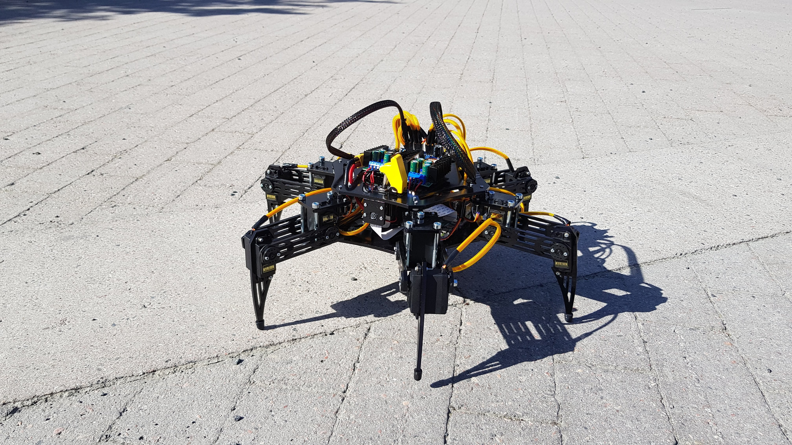

Our mission as 9 engineering students was to build a hexapod from scratch that could walk remotely.
This was done in collaboration with Combitech Sweden, and being part of the mechanical team, I was responsible for the design of the legs and body of the hexapod.
A design methodology framework was used to guide the design process where rapid prototyping was a central part.
One of the most valueable lessons learned from this project was the importance of communication and collaboration between the different teams.
When designing the mechanical parts, it was important to consider the electrical team's requirements for the placement of the electronics.
Having a clear communication with the electrical team was therefore crucial for the success of the hexapod.
Another valueable lesson was that there are challenges that arise with prototyping and testing of mechanical parts.
Working with materiala can be tricky; having a prefect design on the computer does not always translate to a perfect design in physical reality.
It can also be difficult to predict how the joint construction will behave when put together.
It is only during testing that some challenges become apparent.
A continuous process of testing and redesigning can be frustrating, especially when parts take time to produce, but it is also a great way to learn mechanical properties of different materials, and what designs that work and does not work.